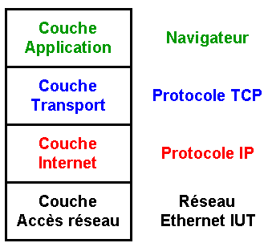

La méthode HTTP TCP/IP

Il existe des protocoles pour tous les langages informatiques et ils servent à pouvoir échanger des données informatiques.
HTTP:
L'http, pour « Hypertext Transfer Protocol », désigne dans le langage informatique un protocole de communication entre un client et un serveur pour le World Wide Web en échangeant leurs données.
Le http sert à structurer un site internet avec HTML, dans ce protocole le client va demander donc une requête au serveur et celui-ci va lui envoyer une réponse, ce protocole est régi par des règles comme par exemple le système de verbes GET, POST, PUT …, le code réponse comme 200 404 et 500.
TCP/IP:
Le TCP/IP est un ensemble de protocoles contenant le TCP « transfert contrôle protocole » et l’IP « internet Protocol », ils servent à la communication entre 2 ordinateurs ; ce système peut permettre par exemple d'envoyer des mails, cet ensemble de protocoles est défini en 4 couches : la couche application, transport, internet et réseau.
Les 4 couches:
Quand nous envoyons un message depuis un ordinateur il va tout d'abord passer par la couche réseau qui va traduire en langage machine le message qui sera envoyé sur le réseau internet, ensuite il passera à la couche 3.
La couche application permet d'envoyer les message à la bonne application et de vérifier les erreurs en utilisant le TCP, et l’envoie à la couche 2.
La couche internet achemine les messages de bout en bout grâce au réseau et au protocole IP, et enfin elle l’envoie à la couche 1.
La couche réseau achemine les données de routeur en routeur par le réseau internet.